Photography standards & art direction.
The lit room. One dominant light source, blacks that hold detail, highlights that lean toward Lamp Gold, a person for scale walking into the light. The client’s own imagery, always with a wall label.
- 16.1Photography style
- 16.2The approved library
- 16.3The grade
- 16.4Unacceptable imagery
- 16.5Cropping and treatments
- 16.6Portrait standards
The lit room.
The style in four pictures and six rules, from Photography_Guidelines.pdf (16 pages, 06_PHOTOGRAPHY_ART_DIRECTION) and the Moodboard.
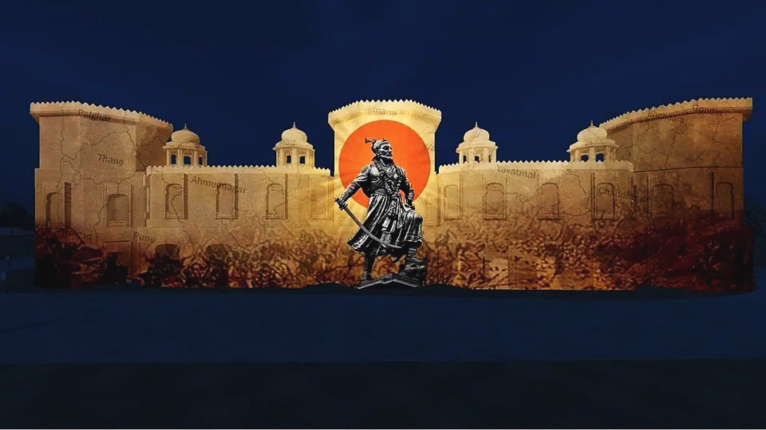
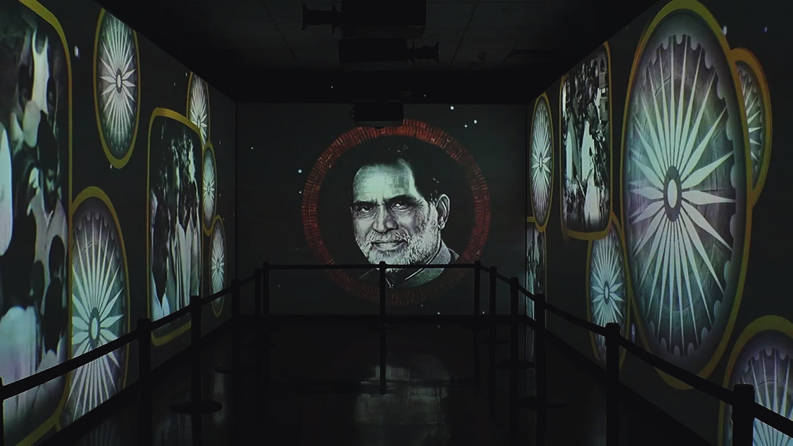

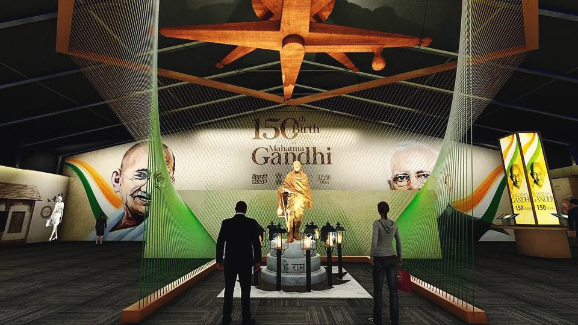
- One light source. The exhibit, the projection or the lamp lights the room; no flash, no fill that flattens.
- Deep, open blacks. Shadows land on Night #0D0D0F with detail; never crushed, never lifted to grey.
- Warm highlights. The highlight band leans toward Lamp Gold; cool secondary light sits ≤ 1 stop under.
- People for scale. Visitors walking into the light, backs or profiles, never posed at camera.
- One-point perspective along the route; thirds for people; symmetry for architecture.
- Every picture carries a wall label (Title · Place) and sits in the room or under the veil.
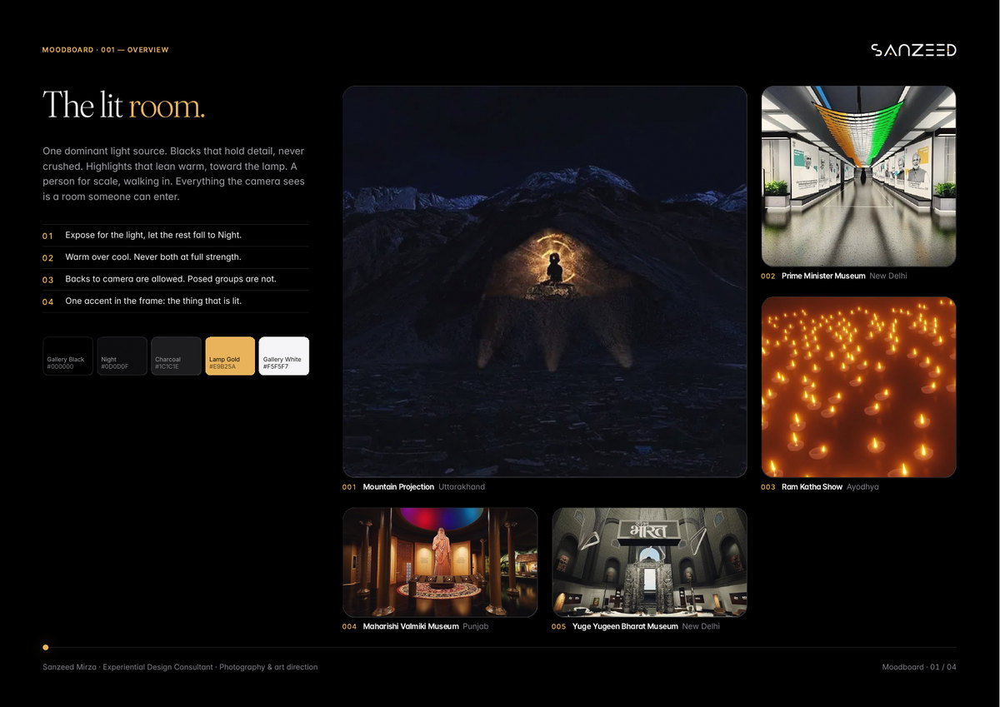
Thirty rooms, graded.
The contact sheet of the approved library with counters and wall labels (06_PHOTOGRAPHY_ART_DIRECTION/Approved_Images).
Thirty graded images from the client’s own project visuals, plus the portrait, curated in approved.json with title, place, category, focal point, suggested uses and a one-line note. Categories: museum (14) · projection (11) · event (1) · architecture (4). Named proof projects covered: Prime Minister Museum, Ram Katha Show, Buddha Park, Yuge Yugeen Bharat Museum, India Pavilion Expo 2025 (concept), G20 Tree Show, Tribal Museum, RBI Museum, Army Museum Abu Dhabi.
Use these for every image slot. JPG q90 and WebP in Approved_Images/; the full catalogue is index.md. No stock, no AI imagery, no placeholder boxes.
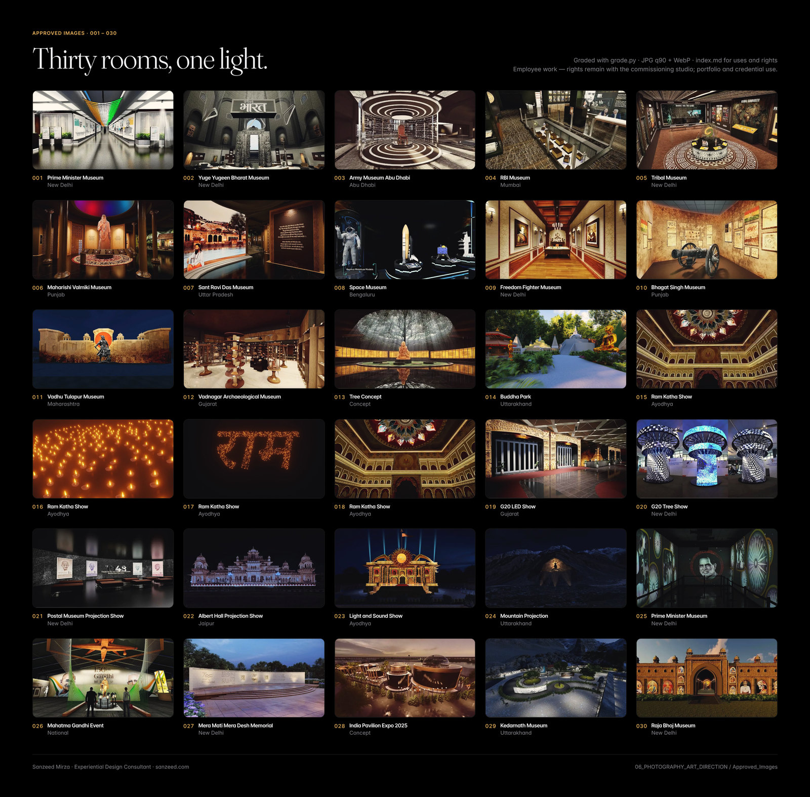
Contrast, toe, warmth — once.
A repeatable grade as a script (Approved_Images/grade.py): python3 grade.py in.webp out.jpg [--strength 1.0]. Applied to every approved image and to every new photograph before use.
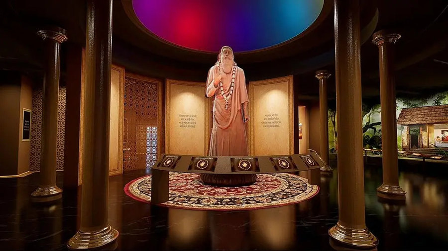


| Step | Parameter | Effect |
|---|---|---|
| 1 | Sine S-curve, contrast 0.18 | Gentle contrast without clipping |
| 2 | Additive toe → Night 13 · 13 · 15, fades out by input 22 % | Blacks land on Night with detail |
| 3 | Warm shift of the 55–100 % luminance band toward Lamp Gold, max 10 % | Highlights lean gold; midtones untouched |
| 4 | Saturation 1.00 | No colour boost — the rooms are already lit |
Strength 0–1 scales the whole grade; 0 is off. Importable: from grade import grade_image. Treatments (crop, veil, label, frame) are in Image_Templates/treat_image.py.
Four ways to lose the room.
Four approved images deliberately mistreated (from Photography_Guidelines.pdf p. 14), and what is never used.


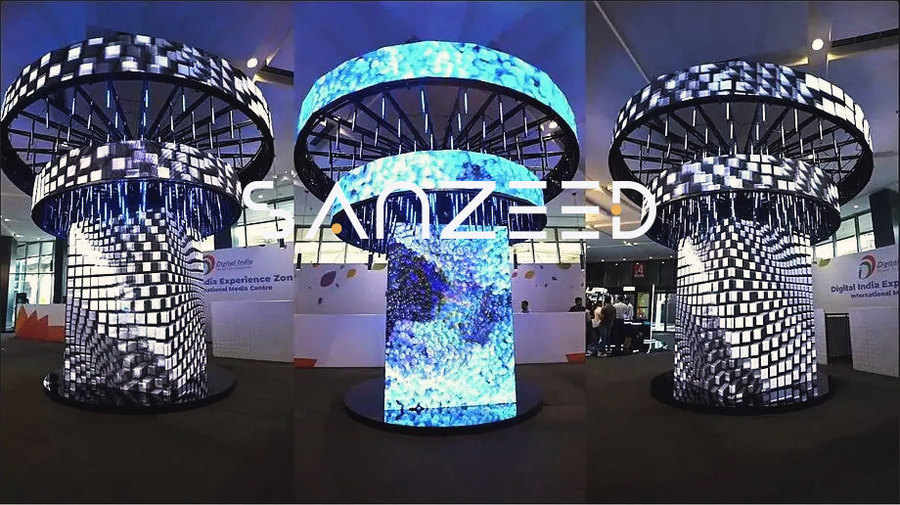
- Stock photography and AI-generated imagery presented as built work. Concept visuals are allowed only labelled “Concept visualisation” (e.g. Tree Concept, India Pavilion Expo 2025).
- Posed people looking at camera, hands shaking, teams in a row.
- Daylight-flat interiors, HDR, lifted shadows, vignettes stronger than 62 %.
- Filters, duotones, gradients, sparkles, lens flares added in post.
- Images without a wall label, or with a caption that invents a project, a place or a client.
- Cropping that cuts the light source out or the person at the joints.
Crop to the focal point, then treat.
Largest crop centred on the focal point and clamped to the frame (treat_image.py --ratio --focal). Darken with the veil when type sits on top; frame in the room when it does not.


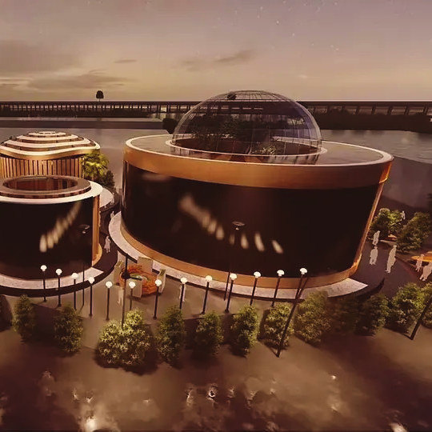

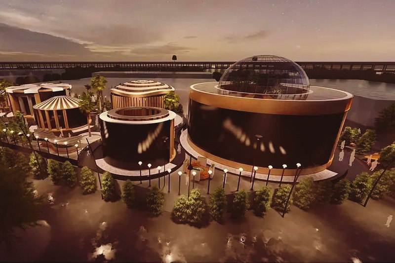


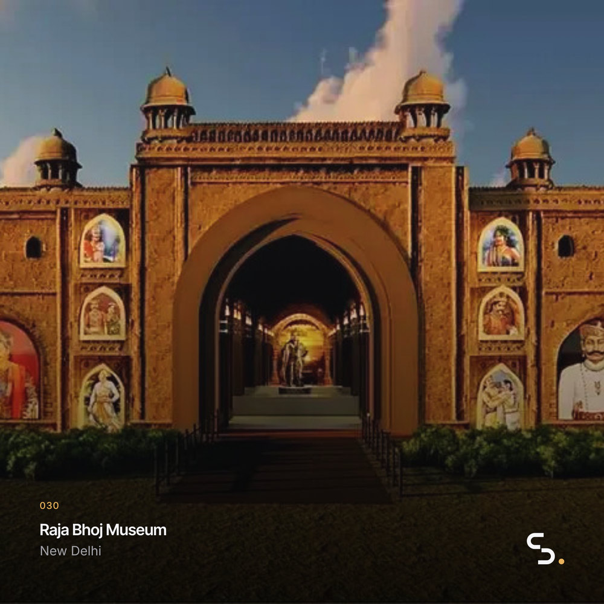
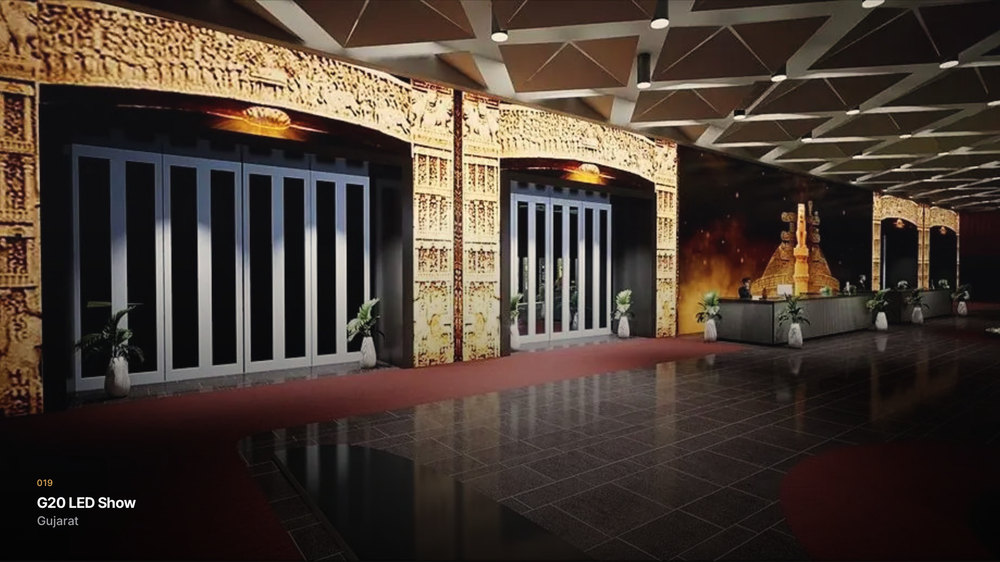
| Ratio | Export | Use |
|---|---|---|
| 16:9 | 1920×1080 · 1600×900 | website cases, slides, OG 1200×630 (crop from 16:9) |
| 4:5 | 1080×1350 (2160×2700 @2×) | Instagram feed, LinkedIn carousel, print spreads |
| 1:1 | 1080×1080 (2160 @2×) | square posts, ads, avatars |
| 9:16 | 1080×1920 | stories, reels, roll-ups |
| 3:2 | 3000×2000 | print, press, headshots |
python3 treat_image.py in.jpg out.jpg --ratio 4:5 --focal 0.5,0.45 --width 2160 --veil 0.72 --title "Ram Katha Show" --place "Ayodhya" --counter 015
One warm light, eye line at a third.
The approved portrait in four ratios (06_PHOTOGRAPHY_ART_DIRECTION/Approved_Images/Portrait; press headshots in 10_MARKETING_COLLATERAL/Press).
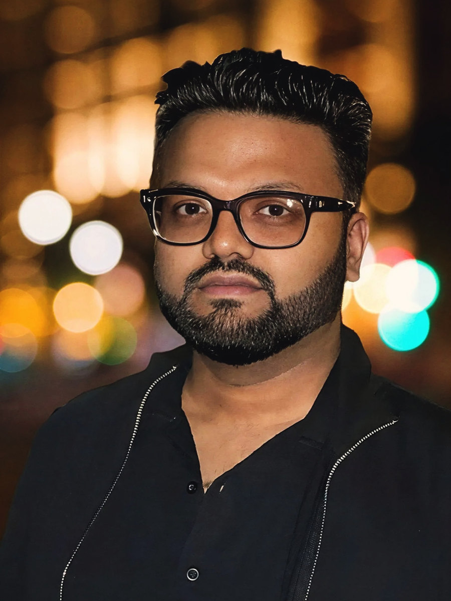

- Warm key, bokeh behind, black garment. The existing portrait sets the standard: one warm light, points of light out of focus, the subject in black.
- Eye line in the upper third (35–38 % of the height) in every crop.
- Night behind. The background continues to #0D0D0F; never a white or grey studio sweep.
- No retouching beyond the grade. No skin smoothing, no teeth, no background swaps.
- New portraits follow the same brief and are graded with grade.py before use.